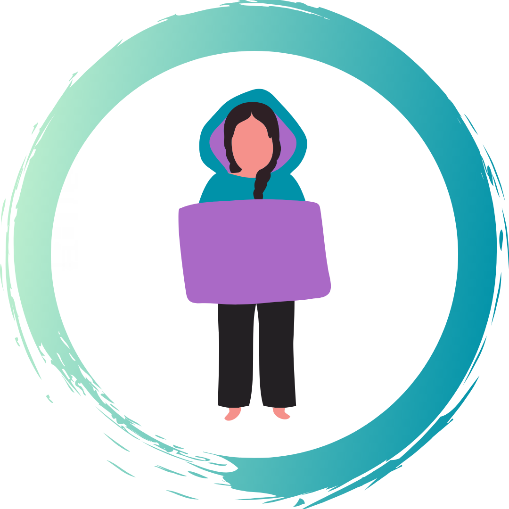
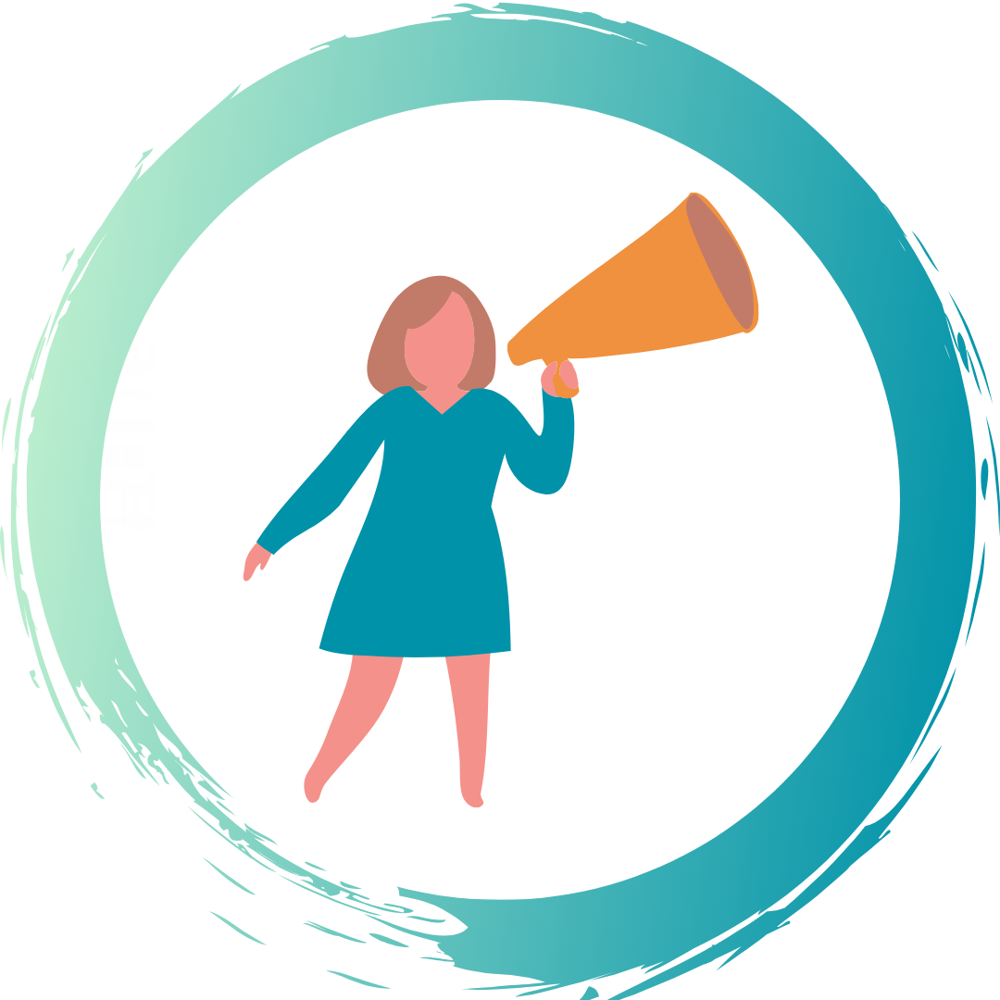
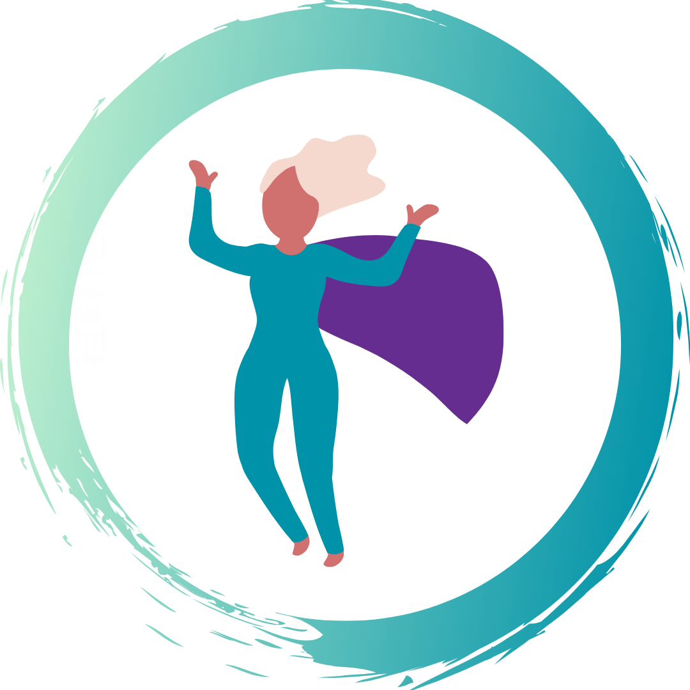

¿Cómo ofrecer soporte y apoyo?

No tengas miedo de acercarte y pedir ayuda. Utiliza estas herramientas como guía.

Qué decir y cómo ayudar. Vía - No More -

Consejos sobre cómo puedes responder a la violencia cuando está ocurriendo. Vía - No More -

Ejemplos de la vida real para ayudarte a prepararte y aprender de otros.